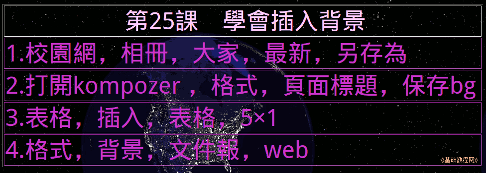

2011-2012 第二学期七年级文字处理和网页教学设计
作者：TeliuTe 来源：基础教程网
二十五、学会插入背景图 返回目录 下一课
（一）教学设计
1、学习目标：学会插入背景图
2、注意事项：提前下载一个图片，名字改成英文的。
3、教学过程：
1）教师准备学案和板书；
2）学生整队进入，开机抄黑板上笔记；
3）教师讲解板书演示操作；
4）学生打指法、日志、完成操作；
5）教师打勾记录学生指法成绩，检查日志和操作；
注：学生抄完笔记就开始打指法、日志，老师讲完后再继续完成；
（二）板书设计(学生笔记)
第25课 学会插入背景图
1、校园网、相册、最新、另存为
2、打开 Kompozer、格式、页面标题、保存 bg
3、表格、插入、表格 5×1
4、格式、背景、文件包、web
5、保存、浏览(*)
5×1会少一格让绕弯，预测三种方法，写到第4格里，再加一行，少写一行
操作图示：

（三）课后记
连着四个班下来腿都麻了
要是能放新标签了好了，可是kz和ff有冲突
--
kz不关的话，指法练习会卡住
要不换个flash版本试试，以后再说
--
先把黑板上过一下，有个思路即可
讲多了也不好好听，学生挺奇怪的有些
--
操作上多注意，过一遍基本都会了
剩下的就是去对着板书来操作
--
以后要是没黑板的话还得换个别的方式来记录笔记
做成图片发给学生，或者做成不能选的格式
--
顺带着把网上签名讲了一下，让去试试还是卡的有些
不过去留言里查了下没看到我们的，不知是怎么回事
--
未免有些打击积极性，发了又看不到
好在练练操作，知道有这么个网上练习的
--
下节是插入图片，分成两课来学图片
每节复习一下上一节的，再加一个新知识点
--
返回目录 下一课
本教程由86团学校TeliuTe制作|著作权所有
基础教程网：http://teliute.org/
美丽的校园……
转载和引用本站内容，请保留版权信息和本站链接。